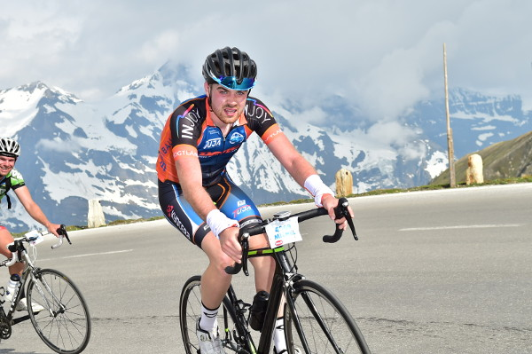

SPORT
Meine PASSION
Das Rennrad und der Radrennsport fasziniert mich jetzt schon lange.. einseits die Technik andernseits der Kampf gegen sich selbst... Nach dem Motto Jan Ullrichs "Quäl dich du Sau". Ich fahre in einen Verein und meine Highlights 2016 waren..
- Schleizer Dreieck Jedermann
- 24h Rennen in Kehlheim
- Velorace Dresden
Im Jahr 2017 möchte ich mich mehr auf die Berge und Alpen konzentrieren, mein Jahres Höhepunkt war der Glockerkönig am 04. Juni 2017 in Österreich. Dies ist ein Bergzeitfahren von 27km mit 1660 Höhenmetern bis auf zum Fuschl Tor... Einer der härstesten Alpässe.. Dieses Rennen beendete ich mit einer Zielzeit von 1:46h und erreicht damit den 334. Platz von insgeamt 2700 Startern, sowie einen 59. Platz in meiner Altersklasse bei knapp 500 Sportlern.
Man kann sowas nicht beschreiben, man muss es erleben ... ;)